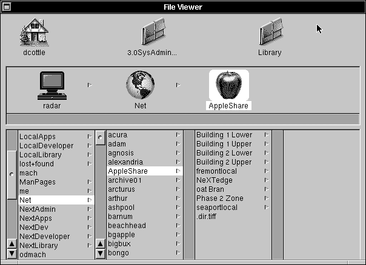

Release 3.3 Copyright ©1994 by NeXT Computer, Inc. All Rights Reserved.
| 11 | NEXTSTEP Computers in a Mixed Network | |
| If you already have a network of computers at your site, you can connect your NEXTSTEP computers to the existing network and share files or printers. NeXT computers can communicate with existing UNIX or Novell NetWare networks. This chapter covers the procedures needed to incorporate a NEXTSTEP computer in a mixed network. It also discusses the use of DNS and SNMP. |
| UNIX Networks |
| As NEXTSTEP computers are compatible with the 4.3BSD version of UNIX, they easily connect to other UNIX computers. In order to communicate with an existing UNIX network, that network must be using TCP/IP over Ethernet. The examples used here assume the non-NEXTSTEP computers are running a version of UNIX that is also compatible with 4.3BSD.
If your non-NEXTSTEP computers run some other variation of UNIX, you'll need to make adjustments to the procedures. If you're not the administrator of the existing non-NEXTSTEP UNIX network, make sure you involve that administrator in these procedures. In addition, the procedures in this section assume a two-level NetInfo domain hierarchy. If you're incorporating a network with a multilevel NetInfo domain hierarchy, consider carefully which domain to use to store the various administrative information.
Planning Before you jump in and begin incorporating your NEXTSTEP computers into an existing UNIX network, you need to find out how the existing network is administered and make some decisions about how the combined network will be maintained.
Network Services The first thing you should do is determine what your goals are for the combined network. Ask yourself what administrative information you want to maintain across NEXTSTEP computers and the other UNIX computers. Decide which features you want users to be able to access. Here's a list of some possibilities: |
| Host information--At a minimum, you'll want to make sure that each computer has access to host information about all the other computers. Without this information, any kind of network communication requires knowing the Internet address of the remote computer, and which other network services you can provide are limited. | ||
| Shared file systems--Are there any file systems that you want users to be able to access from both NEXTSTEP computers and non-NEXTSTEP computers? Are there directories that should only be available to NEXTSTEP computers, or only to non-NEXTSTEP computers? Make a list of each. | ||
| Users and groups--Do you want users to be able to log into any computer on the network, or will you restrict access to specific computers? If you're going to share file systems, you'll probably want to set up network-wide user accounts and user groups as well. | ||
| Mail aliases--Do you want your mail aliases to be consistent across all computers? | ||
| Mail service--Do you want to have one computer be the mail server for the entire network, or will you use multiple mail servers? If you will only use one mail server, will you use a NEXTSTEP computer for that purpose, or one of the non-NEXTSTEP computers? | ||
| Printing--Are there printers attached to NEXTSTEP computers that you want to make available to the non-NEXTSTEP computers? Are there printers attached to the non-NEXTSTEP computers that you want to make available to the NEXTSTEP computers? |
| Existing UNIX Administration
When you're incorporating NEXTSTEP computers into an existing UNIX network, your biggest concern is making sure that the administrative data is consistent across all computers. How you make this happen depends on what scheme is being used on the existing network. The most likely situations are: |
| Individual--Each computer on the UNIX network maintains its own set of administrative files: /etc/hosts, /etc/passwd, /etc/group, /etc/aliases, and so on. | ||
| Distributed--The administrative files are maintained on a central information server, and copies are made to the other computers at regular intervals. The information server might use NIS (Network Information Service) to maintain the administrative data. |
| NetInfo Administration
Once you've determined how the other UNIX computers maintain administrative data, you need to decide how that information will be maintained on your NEXTSTEP computers. |
| NetInfo and configuration server--This is the easiest way to maintain administrative data for your NEXTSTEP computers, just as it would be if the NEXTSTEP computers were connected in an isolated network. If you're connecting an existing NetInfo network to another UNIX network, you'll already have a NetInfo and configuration server for your NEXTSTEP computers. | ||
| No NetInfo and configuration server--If you're connecting a single NEXTSTEP computer to an existing UNIX network, there's no need to set up a master NetInfo and configuration server. If you have more than one NeNeXTXT computer, you can set them up without a master server. However, administration will be easier if you maintain administrative data for the NEXTSTEP computers with a master NetInfo server. | ||
| NIS--If the non-NEXTSTEP computers are using NIS to maintain administrative data, you might decide to set up your NEXTSTEP computers as NIS clients. With this scheme, all computers on the combined network get their administrative data from the same source. |
| Combined Administration
Now that you know how the non-NEXTSTEP computers maintain their administrative data, and you've decided how your NEXTSTEP computers will maintain theirs, you need to decide how the two sets of data will be kept consistent. Several possibilities are: |
| NetInfo as the master--All administrative changes (adding hosts, adding users and groups, creating mail aliases, changing passwords) are performed with NetInfo. Then the information is copied from NetInfo to the non-NEXTSTEP computers. The non-NEXTSTEP computers might use NIS to maintain the data. | ||
| Non-NeXT as the master--All administrative changes are performed on the non-NEXTSTEP computers, then the information is copied into NetInfo for the NEXTSTEP computers. The administrative data for the non-NEXTSTEP computers might come from NIS. | ||
| NIS--Administrative changes are handled with NIS for the entire combined network. In this situation, the NIS master server can be a NEXTSTEP computer or one of the non-NEXTSTEP computers. | ||
| Independent--Administrative changes are made anywhere. This scheme isn't recommended. When the administrative information is combined, it's almost impossible to determine which data is accurate. For example, is the user account information for the user tom on the NEXTSTEP computers the correct data, or is it the user account stored on the non-NEXTSTEP computers? What if tom changes his password while logged into a NEXTSTEP computer one month, then changes it while logged into a non-NEXTSTEP computer the next month? As you can see, allowing changes to be made on both the NEXTSTEP and non-NEXTSTEP computers can create an administrative nightmare. |
| Setting Up the NEXTSTEP Computers
If you're incorporating an existing NetInfo network, you can skip this section. If you're going to have a NetInfo and configuration server for your NEXTSTEP computers, set up the network following the instructions in Chapter 2, "Setting Up a NetInfo Network," or Chapter 10, "Configuring a Large Network." If you want to set up your NEXTSTEP computers without a NetInfo and configuration server, follow these procedures for each NEXTSTEP computer: |
| 1. | Start up the computer you want to add. If it's already physically connected to the existing UNIX network, a window appears with the following message: |
 No response from network configuration server.
No response from network configuration server.
 Type 'Ctrl-c' to start up computer without a network connection.
Type 'Ctrl-c' to start up computer without a network connection.
| Type Control-c to continue the boot process without connecting to the network. |
| 2. | Start up HostManager, located in /NextAdmin. If you're not logged in as root, HostManager displays a panel telling you that you must have superuser status to run this application. Enter the password for the root account and click Login. | |
| 3. | Open the Local Configuration window by choosing Local from the main menu. | |
| 4. | Set the host name of the local system by clicking the button next to the text field under Hostname. Enter the host name of this computer in the text field. | |
| 5. | Set the Internet address of the local system by clicking the switch next to the text field under Internet Address. Edit the default address to be the address you want the computer to have. Make sure the number is unique and compatible with the Internet addresses used for the existing UNIX network. For more information, see Appendix C, "Internet Addressing." | |
| 6. | Click Use Local Domain Only under NetInfo Binding. This prevents the host from looking for a parent NetInfo domain. |
| 7. | Click the Set button to save the changes you've just made. | |
| 8. | Since you're disabling the link between the local and parent NetInfo domains, HostManager presents a panel requiring you to confirm that you want to proceed. Click OK to proceed. |
| 9. | HostManager then scans the local NetInfo domain for all connections to the parent domain. As it finds each one, you must confirm that you want to break the connection. In this case, only a confirmation panel for broadcasthost should appear. Click OK to proceed. |
| 10. | You must restart the computer in order for the new host name and address to be configured. Click OK in the Reboot Confirmation panel that appears. |
| 11. | If you're configuring multiple NEXTSTEP computers without a NetInfo and configuration server, you must use HostManager to add a host entry on each NEXTSTEP computer for each of the other NEXTSTEP computers: |
| a. | Start up HostManager. | |
| b. | Choose New from the Host menu. | |
| c. | Enter the host name, Internet address, and Ethernet address for one of the other NEXTSTEP computers. | |
| d. | Choose Save from the Host menu. | |
| e. | In the panel that appears, click "This is host's parent domain" to uncheck it. |
| f. | Click OK. | |
| g. | Repeat for each of the other NEXTSTEP computers. |
| This computer is now connected to a non-NetInfo network, and it has access to host information for any other NEXTSTEP computers. If you have multiple NEXTSTEP computers without a NetInfo and configuration server, repeat this procedure for each.
Setting Up Consistent Administrative Data With your NEXTSTEP and non-NEXTSTEP computers physically connected in a network, you're ready to combine the administrative data. The procedures in this section make sure that all the computers on the combined network initially have access to the same information. Once you've combined the initial administrative information, you need to set up procedures that will make sure that any future changes (new hosts, users, groups, and so on) will be made available to all computers. Note: These procedures only cover hosts, users, groups, and mail aliases. If you want to share other administrative information, modify the procedures as needed.
Host Information The first information you'll want to combine is the host information. This allows all the computers to identify each other, and permits setting up additional network services. |
| 1. | Log in as root on your NetInfo and configuration server. If you aren't using a NetInfo and configuration server, log into one of the NEXTSTEP computers. | |
| 2. | Copy the host information for your NEXTSTEP computers into a file by entering the following command in a shell window: |
 nidump hosts / > nexthosts
nidump hosts / > nexthosts
| This command dumps the host information from the NetInfo database and places it in a file named nexthosts. You'll use this file later to update the non-NEXTSTEP computers. |
| 3. | If the non-NEXTSTEP information server is an NIS master, use ypcat to create a file containing the host information for the non-NEXTSTEP computers. | |
| 4. | Use a file transfer program such as ftp to transfer a copy of the file /etc/hosts (or the file you created with ypcat) from the non-NEXTSTEP information server to your NEXTSTEP computer, naming the copy something like otherhosts. As your NEXTSTEP computer doesn't yet have access to the host name of the non-NEXTSTEP computer, you need to use its Internet address when making the connection with ftp. | |
| 5. | Use Edit to delete any lines in otherhosts that reference localhost or broadcasthost. If you find any other entries that conflict with the NEXTSTEP host information--duplicate host names or Internet addresses--you'll need to use HostManager to change the host information for your NEXTSTEP computers. Remember that the host names and Internet addresses must be unique. | |
| 6. | Load the host information into your NetInfo domain by entering the following command into a shell window: |
 niload hosts / < otherhosts
niload hosts / < otherhosts
| Now the NEXTSTEP computers have access to host information for all the NEXTSTEP and non-NEXTSTEP computers on the network. If you're using multiple NEXTSTEP computers without a NetInfo and configuration server, repeat steps 4 through 6 on each NEXTSTEP computer.
Note: You can use HostManager to add non-NEXTSTEP hosts to NetInfo instead of these procedures. However, it's usually more convenient to use niload unless you have only one or two hosts to configure. |
| 7. | Make host information about the NEXTSTEP computers available to the non-NEXTSTEP computers, using whatever procedures are normally used to add hosts to the existing UNIX network. If you prefer, you can use the following procedure, which might be easier than adding individual host entries. |
| a. | Edit nexthosts to remove entries for localhost and broadcasthost and to make sure there are no conflicts with the host information for the non-NEXTSTEP computers. | |
| b. | Use a file transfer program such as ftp to copy nexthosts to the non-NEXTSTEP information server. If there isn't a non-NEXTSTEP information server, copy the file to each non-NEXTSTEP computer in turn. | |
| c. | Log into the non-NEXTSTEP computer(s) as root and append the contents of nexthosts to /etc/hosts (or other file, as appropriate), making sure that you end up with entries for all computers, NEXTSTEP and non-NEXTSTEP. | |
| d. | If the non-NEXTSTEP information server is an NIS master server, enter the appropriate commands to update the NIS maps. For example, the following commands will work in some situations: |
 cd /var/yp
cd /var/yp
 make
make
| All computers on the network, both NEXTSTEP and non-NEXTSTEP, now have access to host information for all the other computers.
User Account and Group Information If there are any user accounts on either the non-NEXTSTEP computers or the NEXTSTEP computers that you want to make available to the combined network, you'll need to combine the user account and group information from both. In order for a user account to be available network-wide, the user's home directory must be on a shared file system available to the combined network.
Preparing NeXT User Accounts Network user accounts on NEXTSTEP computers usually have their home directory on a shared file system that is mounted under /Net. Since this isn't a universal convention, non-NEXTSTEP computers might not mount shared file systems in the same way. If there are any existing NEXTSTEP user accounts that you want to make available to the combined network, you must first modify them. If you don't have any existing user accounts on the NEXTSTEP computer that you want to make available to the combined network, you can skip this section. |
| 1. | Log into the NEXTSTEP home directory server as root and start up UserManager. | |
| 2. | Choose Open User from the User Record menu. In the Open in NetInfo Domain panel, click the appropriate domain, then click the user you want to make available to the combined network. Click OK. | |
| 3. | Modify the Home Directory field so that the path of the home directory is appropriate for a shared file system on the combined network. For example, if the home directory is /Net/earth/Users/mary, you might modify the field to read /Users/mary. |
| Note: If you have multiple home directory servers, you'll need to mount each remote directory in a different place. For example, you might create a directory named /Homes on each computer, then mount the various home directories under it, perhaps as /Homes/server/Users. Make sure that you're consistent on all computers. See Chapter 4, "Setting Up the Network File System," for more information. |
| 4. | Choose Save from the User Record menu. Review the information in the attention panel that appears, then click OK. | |
| 5. | Click Yes in the panel that appears to create a new home directory for the user. | |
| 6. | Quit UserManager. | |
| 7. | Start up NFSManager. Choose Import To from the main menu. In the Select NetInfo Domain panel that appears, click / in the left column, then click OK. | |
| 8. | In the list of imported directories, click the directory that's used for home directories. |
| 9. | Modify the Mount point field so that it isn't mounted under /Net. For example, if the mount point is /Net/earth/Users, modify the field to read /Users, or maybe /Homes/server/Users. Click OK. |
| 10. | Repeat these steps for each NEXTSTEP user account. | |
| 11. | Copy the user account information into a file by entering the following command in a shell window: |
 nidump passwd / > nextusers
nidump passwd / > nextusers
| This command dumps the user account information from the NetInfo database and copies it into a file named nextusers. You'll use this file later to update the non-NEXTSTEP computers. |
| 12. | Copy the group information into a file by entering the following command in a shell window: |
 nidump group / > nextgroups
nidump group / > nextgroups
| This command dumps the group information from the NetInfo database and copies it into a file named nextgroups. You'll use this file later to update the non-NEXTSTEP computers. |
| Combining User and Group Information
Now transfer the user and group information. |
| 1. | If the non-NEXTSTEP information server is a master NIS server, log into the NIS master server and use ypcat to create files containing the user account and group information. | |
| 2. | Log into the NetInfo master server as root. If you aren't using a NetInfo server, log into one of the NEXTSTEP computers. | |
| 3. | Use a file transfer program such as ftp to transfer a copy of the files /etc/passwd and /etc/group (or the files you created with ypcat) from the non-NEXTSTEP information server to your NEXTSTEP computer, naming the copies something like otherusers and othergroups. | |
| 4. | Use Edit to delete any user accounts in otherusers that already exist on the NEXTSTEP computer(s)--root, for example. If you find any other entries that conflict with the NEXTSTEP user information--duplicate user names or user IDs--you'll need to use UserManager to change the user account information on your NEXTSTEP computers. Remember that the user names and user IDs must be unique. | |
| 5. | Use Edit to delete any groups in othergroups that already exist on the NEXTSTEP computer(s). If you find any entries that conflict with the NEXTSTEP group information--duplicate group names or group IDs--you'll need to use UserManager to change the group information on your NEXTSTEP computers. Remember that the group names and group IDs must be unique. | |
| 6. | Load the user and group information into your NetInfo domain by entering the following commands in a shell window: |
 niload passwd / < otherusers
niload passwd / < otherusers
 niload group / < othergroups
niload group / < othergroups
| Now the NEXTSTEP computers have access to user account and group account information from the non-NEXTSTEP computers. If you're using multiple NEXTSTEP computers without a NetInfo and configuration server, repeat steps 3 through 6 on each NEXTSTEP computer.
Note: You can use UserManager to add user account and group information to NetInfo instead of these procedures. However, it's usually more convenient to use niload unless you only have one or two user and group accounts to add. |
| 7. | If you have existing user or group accounts on the NEXTSTEP computers, make the information available to the non-NEXTSTEP computers: |
| a. | Edit nextusers to remove entries for any accounts that already exist on the non-NEXTSTEP computers, such as root, and to make sure there are no conflicts with the existing non-NEXTSTEP user accounts. | |
| b. | Edit nextgroups to remove entries for any groups that already exist on the non-NEXTSTEP computers, and to make sure there are no conflicts with the existing non-NEXTSTEP groups. | |
| c. | Use a transfer program such as ftp to copy nextusers and nextgroups to the non-NEXTSTEP information server. If you aren't using a non-NEXTSTEP information server, copy the file to each non-NEXTSTEP computer in turn. | |
| d. | Log into the non-NEXTSTEP computer(s) and merge the contents of nextusers with /etc/passwd, and the contents of nextgroups with /etc/group. | |
| e. | If the non-NEXTSTEP information server is an NIS master server, enter the appropriate commands to update the NIS maps. |
| Mail Aliases
If you currently have mail aliases defined on either the NEXTSTEP or non-NEXTSTEP computers, you'll need to make these aliases available to the combined network so that mail will work properly. |
| 1. | Log into your NetInfo and configuration server as root. If you're not using a NetInfo and configuration server, log into any NEXTSTEP computer. | |
| 2. | If you have existing aliases on your NEXTSTEP computers that you want to make available to the rest of the network, copy the alias information into a file with the following command: |
 nidump aliases / > nextaliases
nidump aliases / > nextaliases
| 3. | If the non-NeNEXTSTEPXT information server is a master NIS server, log into that server and use ypcat to create a file containing the alias information. | |
| 4. | Transfer a copy of the file /etc/aliases (or the file you created with ypcat) from the non-NEXTSTEP information server to the NEXTSTEP computer. | |
| 5. | Use Edit to delete any aliases that are duplicated in NetInfo. | |
| 6. | Load the aliases information into your NetInfo domain by entering the following command in a shell window: |
 niload aliases / < otheraliases
niload aliases / < otheraliases
| 7. | If you have existing aliases on the NEXTSTEP computers that you want to make available across the combined network, you need to transfer them. |
| a. | Edit nextaliases to remove any aliases that are already defined on the non-NEXTSTEP computers. | |
| b. | Use a file transfer program such as ftp to transfer nextaliases to the non-NEXTSTEP information server. If you don't have a non-NEXTSTEP information server, transfer the file to each non-NEXTSTEP computer in turn. | |
| c. | Append the contents of nextaliases to /etc/aliases. | |
| d. | If the non-NEXTSTEP information server is an NIS server, enter the appropriate commands to update the NIS maps. |
| Shared Files
You can share directories across the entire combined network using NFS. If you're using network-wide user accounts, you'll have to set up a shared directory to hold the home directories.
Sharing a NEXTSTEP File Follow these steps to make a directory exported from a NEXTSTEP file server available to the non-NEXTSTEP computers: |
| 1. | Use NFSManager to make sure that the exported directory is available to the non-NEXTSTEP computers. For more information on exporting directories with NFSManager, see Chapter 4, "Setting Up the Network File System." | |
| 2. | Use NFSManager to make sure that the exported directory is mounted somewhere other than under /Net on the NEXTSTEP computers. Since /Net is not a universal convention, mounting a directory here may be inconsistent with the non-NEXTSTEP computers. | |
| 3. | Edit /etc/fstab on each non-NEXTSTEP computer to include the mount information for the directory exported from the NEXTSTEP computer. An entry will look something like this: |
 server:/directory /mountpoint nfs ro,bg,intr,nosuid 0 0
server:/directory /mountpoint nfs ro,bg,intr,nosuid 0 0
| In this entry, server is the host name of the NEXTSTEP computer exporting the directory directory, and /mountpoint is where the directory will appear on the non-NEXTSTEP computer. For more information about this entry, including the options, see the UNIX manual pages for mount and fstab. |
| 4. | If necessary, use the mkdir command to create the mount point directory on the non-NEXTSTEP computer. | |
| Note: Since there are variations in the NFS configuration procedures for different types of non-NEXTSTEP computers, check the requirements for your particular site for specific NFS configuration information. |
| Sharing a Non-NEXTSTEP File
Follow these steps to make a directory exported from a non-NEXTSTEP file server available to your NEXTSTEP computers: |
| 1. | Edit the file /etc/exports on the non-NEXTSTEP file server to make sure the entry for the exported directory allows access to the NEXTSTEP computers. For more information, see the UNIX manual pages for exports and exportfs. | |
| 2. | Use NFSManager on the NEXTSTEP computers to mount the remote directory. In order for the remote directory to be consistent across the combined network, don't mount it under /Net. For more information, see Chapter 4. |
| Mail Service
In order for mail to operate correctly, you need to coordinate mail service for the entire combined network. You can set up a single mail server--either a NEXTSTEP computer or a non-NEXTSTEP computer--or you can use multiple servers. This section describes how to set up a single mail server.
Using a Non-NEXTSTEP Mail Server Follow these procedures to use an existing non-NEXTSTEP mail server for the combined network: |
| 1. | If you have a NEXTSTEP computer that's set up as a mail server, follow these steps to turn it into a mail client: |
| a. | Log into the NEXTSTEP mail server. Start up HostManager, then choose Open from the Host menu. | |
| b. | Choose the root domain by clicking / in the top half of the Open in NetInfo Domain window, then click the host name of the NEXTSTEP mail server in the bottom half. Click OK. |
| c. | Click mailhost in the Host Name Aliases list, then click the Remove button below the list. Choose Save from the Host menu. | |
| d. | Start up NetInfoManager. | |
| e. | In the local domain window, click /locations, then click sendmail. |
| f. | Choose Delete from the Domain menu, then click Delete Anyway in the attention panel that appears. | |
| g. | Start up NFSManager. In the Exported Directories window, click /LocalLibrary/Images/People, then click the Remove button. Remove the entry for /usr/spool/mail as well. | |
| h. | If there are any files in /usr/spool/mail on the NEXTSTEP mail server containing mail, transfer these files to /usr/spool/mail on the non-NEXTSTEP mail server. (Don't overwrite any existing files--merge them instead.) | |
| i. | Log into the non-NEXTSTEP information server and edit /etc/hosts to remove mailhost from the entry for the NEXTSTEP mail server. If the non-NEXTSTEP information server is an NIS master server, remake the maps. If there isn't a non-NEXTSTEP information server, modify the hosts file on each non-NEXTSTEP computer. |
| 2. | Start up HostManager and open the host entry for the non-NEXTSTEP mail server. | |
| 3. | Verify that the non-NEXTSTEP mail server includes mailhost as a host name alias. If it doesn't, add the alias mailhost. | |
| 4. | Log into the non-NEXTSTEP mail server as root, and create a directory named /LocalLibrary/Images/People. This directory is used by NeXTmail to store alias and mail picture files. | |
| 5. | In /LocalLibrary/Images/People, create a file named passwd that contains a copy of the combined user account database, and another named aliases that contains a copy of the combined mail aliases database. If you want your NEXTSTEP users to have mail pictures, create TIFF images following the instructions in Chapter 6, "Managing Electronic Mail," and store them in the same directory. If you already have mail picture files on a NEXTSTEP computer, simply transfer them to the non-NEXTSTEP mail server. | |
| Note: In order for NeXTmail to have access to current aliases, the files in /LocalLibrary/Images/People must be updated whenever a new user or alias is added. See "Maintaining Consistent Administrative Data" later in this chapter. | ||
| 6. | Open /etc/exports. Make sure that /usr/spool/mail is exported so that the NEXTSTEP computers will have access to it. Add an entry for /LocalLibrary/Images/People. | |
| 7. | Log into one of the NEXTSTEP computers and start up NFSManager. Choose Import To from the main menu, then click / in the Select in NetInfo Domain panel. If you don't have a master NetInfo server, select the local domain. Click OK. | |
| 8. | If you already had aNeXTmail server configured, there will be entries for /usr/spool/mail and /LocalLibrary/Images/People in this list. Remove both. | |
| 9. | Click the Add button. In the panel that appears, enter the host name of the non-NEXTSTEP mail server in the Server name field, and enter /usr/spool/mail in the Remote directory field. Click OK. |
| 10. | Enter /usr/spool/mail in the "Mount point" field. Adjust the pop-up lists, if necessary, so that the directory will be mounted read/write and in foreground. Click OK. | |
| 11. | Click the Add button. In the panel that appears, enter the host name of the non-NEXTSTEP mail server in the Server name field, and enter /LocalLibrary/Images/People in the Remote directory field. Click OK. | |
| 12. | Enter /LocalLibrary/Images/People in the "Mount point" field. Adjust the pop-up lists, if necessary, so that the directory will be mounted read/write and in foreground. Click OK. |
| 13. | Reboot all the NEXTSTEP computers so that they will be mail clients of the non-NeXNEXTSTEPT mail server. |
| Using the NeXTMail Server
Follow these procedures to use the existing NeXTmail server as the mail server for the entire combined network. |
| 1. | Log into the non-NEXTSTEP mail server as root. | |
| 2. | Have the former mail server use the correct sendmail configuration file, probably by making sendmail.cf a copy of, or link to, some other configuration file. | |
| 3. | If there are any files in /usr/spool/mail on the non-NEXTSTEP mail server containing mail, copy these files to /usr/spool/mail on the NeXTmail server. (Don't overwrite any existing mail files --merge them instead.) | |
| 4. | Remove the entry for /usr/spool/mail from /etc/exports. | |
| 5. | Log into the non-NEXTSTEP information server and edit /etc/hosts to remove mailhost from the entry for the non-NEXTSTEP mail server. Add mailhost to the entry for the NeXTmail server, if necessary. If the non-NEXTSTEP information server is an NIS master server, remake the maps. If there isn't a non-NEXTSTEP information server, make the same modifications to /etc/hosts on each non-NEXTSTEP computer in turn. | |
| 6. | Modify the contents of /etc/fstab so that /usr/spool/mail is mounted from the NeXTmail server. | |
| 7. | Reboot all the non-NEXTSTEP computers so that they become mail clients of the NeXTmail server. | |
| 8. | Log into a NEXTSTEP computer and use HostManager to remove the alias mailhost from the entry for the non-NEXTSTEP mail server. |
| Printers
With a combined network, you can allow the NEXTSTEP computers to access printers attached to the non-NEXTSTEP computers, and the non-NEXTSTEP computers to access printers attached to the NEXTSTEP computers. Keep in mind that accessing a non-PostScript printer from a NeXT computer is only useful for printing ASCII text with a UNIX command. Accessing a NEXTSTEP printer from a non-NEXTSTEP computer is only useful for applications that produce PostScript output.
Using Non-NEXTSTEP Printers from a NEXTSTEP Computer To configure a non-NEXTSTEP printer for use from a NEXTSTEP computer, use the following procedures: |
| 1. | Set the appropriate permissions to permit access to the remote printer. This usually involves entering the host names of your NEXTSTEP computers in /etc/hosts.lpd on the non-NEXTSTEP print server. | |
| 2. | Log into one of the NEXTSTEP computers and create a file named something like yourprintcap containing an entry similar to the following: |
 PrinterName|alias:\
PrinterName|alias:\
 :lp=:rm=remotehost:rp=remoteprinter:\
:lp=:rm=remotehost:rp=remoteprinter:\
 :sd=/usr/spool/NeXT/PrinterName:\
:sd=/usr/spool/NeXT/PrinterName:\
 :ty=printertype:
:ty=printertype:
| Here's a description of the variables used in this example: |
| PrinterName--Name that will appear in the Print panel on the NEXTSTEP computers | ||
| alias--Optional alias for the remote printer | ||
| remotehost--Host name of the remote print server | ||
| remoteprinter--Name of the printer as it appears in /etc/printcap on the remote system | ||
| printertype--Comment string that will appear in the Print panel under Type; usually describes the type of printer ("PostScript," for example) |
| For more information, see the UNIX manual page for printcap. |
| 3. | Load the file yourprintcap into your NetInfo domain by entering the following command in a shell window as root (if you want to load this information into a different domain, replace "/" with "." or ".." as appropriate): |
 niload printcap / < yourprintcap
niload printcap / < yourprintcap
| 4. | Restart the NEXTSTEP computer(s). This starts lpd print daemons for the remote printers. |
| Using NEXTSTEP Printers from a Non-NEXTSTEP Computer
To configure a printer attached to a NEXTSTEP computer for use from non-NEXTSTEP computers, use the following procedures: |
| 1. | Log into the NEXTSTEP print server and add the host names of the non-NEXTSTEP computers to /etc/hosts.lpd. | |
| 2. | Log into each non-NEXTSTEP computer in turn and add an entry to /etc/printcap that looks something like this: |
 PrinterName|alias:\
PrinterName|alias:\
 :lp=:rm=remotehost:rp=remoteprinter:\
:lp=:rm=remotehost:rp=remoteprinter:\
 :sd=/usr/spool/lpd/PrinterName:\
:sd=/usr/spool/lpd/PrinterName:\
 :ty=printertype:
:ty=printertype:
| Here's a description of the fields used in this example: |
| PrinterName--Name the non-NEXTSTEP computers will use to access the printer | ||
| alias--Optional alias for the printer | ||
| remotehost--Host name of the NEXTSTEP print server | ||
| remoteprinter--Name of the printer as listed in the NetInfo /printers directory | ||
| printertype--Comment string that usually describes the type of printer ("PostScript," for example) |
| 3. | Create a spool directory on each non-NEXTSTEP computer, as specified in the sd parameter of the printcap entry for the NEXTSTEP printer. You will need one spool directory for each printer you add. |
 cd /usr/spool/lpd
cd /usr/spool/lpd
 mkdir Printername
mkdir Printername
 chmod 770 Printername
chmod 770 Printername
 chown daemon.daemon Printername
chown daemon.daemon Printername
| Note: Some UNIX systems require that you set additional permissions on the spool directory. Check the requirements of your particular site. |
| 4. | Restart the non-NEXTSTEP computers. This starts lpd print daemons for the remote printers. |
| Maintaining Consistent Administrative Data
Now that you've given all your computers access to an initial set of consistent administrative data, you'll need to implement a scheme that will maintain this data. In order to avoid an administrative nightmare, you should choose a master administrative service, and then make changes using only that service. For example, you might decide to use the NetInfo manager applications to add all new hosts, users, groups, and mail aliases, then distribute that information to the non-NEXTSTEP computers. There are five different administration schemes discussed in this section: |
| NetInfo as master service, non-NEXTSTEP computers maintain individual flat files | ||
| NetInfo as master service, non-NEXTSTEP information server distributes data to the other computers | ||
| NetInfo as master service, NIS master server maintains data for the non-NEXTSTEP computers | ||
| Non-NEXTSTEP information server as master service (with or without NIS), NetInfo maintains data for the NEXTSTEP computers | ||
| NIS maintains data for the entire combined network |
| Important: The procedures in this section should only be considered guidelines. Some important considerations to note are: |
| The procedures used on the non-NEXTSTEP computers at your site may require that you modify the suggestions. For example, if your NIS master server uses flat files stored somewhere other than /etc to make its maps, you'll need to modify the distribution script. | ||
| Only the administrative information for hosts, users, groups, and mail aliases is covered. Similar procedures can be used for any other administrative data you want to share. | ||
| The examples assume that the non-NEXTSTEP UNIX computers have access to rsh and rcp. | ||
| All the examples distribute complete administrative data every 15 minutes. If you have a large number of computers, or a large amount of administrative information, distributing the data every 15 minutes can degrade network performance. Some administrative data changes more frequently than others (the user account information changes when a user changes a password, host information only changes when a new computer or host alias is added to the network). Consider carefully whether to distribute information less frequently, or even set up multiple scripts to distribute the different types of data separately, and run each at different intervals. |
| Distributing Data from NetInfo to Multiple Non-NEXTSTEP Computers
If you're using NetInfo as your master administrative service, you need to copy administrative data out of the NetInfo database to the non-NEXTSTEP computers. The procedures in this section apply when data is maintained individually on the non-NEXTSTEP computers. |
| 1. | On each non-NEXTSTEP computer, edit /.rhosts to include the host name of the master NetInfo server. This allows the NEXTSTEP computer to access the non-NEXTSTEP computer and execute commands as root. | |
| 2. | Log into the master NetInfo server as root. | |
| 3. | Use Edit to create a file named something like /etc/pushinfo containing the following lines, replacing host1... host4 with the host names of the non-NEXTSTEP computers: |
 CLIENTS='host1 host2 host3 host4'
CLIENTS='host1 host2 host3 host4'
 nidump passwd / > /etc/passwd
nidump passwd / > /etc/passwd
 nidump group / > /etc/group
nidump group / > /etc/group
 nidump hosts / > /etc/hosts
nidump hosts / > /etc/hosts
 nidump aliases / > /etc/aliases
nidump aliases / > /etc/aliases
 for HOST in $CLIENTS
for HOST in $CLIENTS
 do
do
 rcp /etc/passwd $HOST:/etc/passwd
rcp /etc/passwd $HOST:/etc/passwd
 rcp /etc/group $HOST:/etc/group
rcp /etc/group $HOST:/etc/group
 rcp /etc/hosts $HOST:/etc/hosts
rcp /etc/hosts $HOST:/etc/hosts
 rcp /etc/aliases $HOST:/etc/aliases
rcp /etc/aliases $HOST:/etc/aliases
 done
done
| 4. | Edit /usr/lib/crontab.local (create it, if necessary) and add a line similar to the following: |
 0,15,20,45 * * * * root /etc/pushinfo
0,15,20,45 * * * * root /etc/pushinfo
| This entry runs the script /etc/pushinfo as root every 15 minutes. |
| Distributing Data from NetInfo to a Non-NEXTSTEP Information Server
If you've chosen to use NetInfo as the master administrative service, and you have a non-NEXTSTEP information server, administrative data needs to be distributed from NetInfo to the non-NEXTSTEP information server. |
| 1. | On the non-NEXTSTEP information server, edit /.rhosts to include the host name of the master NetInfo server. This allows the NEXTSTEP computer to access the non-NEXTSTEP computer and execute commands as root. | |
| 2. | Log into the master NetInfo server as root. | |
| 3. | Use Edit to create a file named something like /etc/pushinfo containing the following lines, replacing otherserver with the host name of the non-NEXTSTEP information server. |
 HOST='otherserver'
HOST='otherserver'
 nidump passwd / > /etc/passwd
nidump passwd / > /etc/passwd
 nidump group / > /etc/group
nidump group / > /etc/group
 nidump hosts / > /etc/hosts
nidump hosts / > /etc/hosts
 nidump aliases / > /etc/aliases
nidump aliases / > /etc/aliases
 rcp /etc/passwd $HOST:/etc/passwd
rcp /etc/passwd $HOST:/etc/passwd
 rcp /etc/group $HOST:/etc/group
rcp /etc/group $HOST:/etc/group
 rcp /etc/hosts $HOST:/etc/hosts
rcp /etc/hosts $HOST:/etc/hosts
 rcp /etc/aliases $HOST:/etc/aliases
rcp /etc/aliases $HOST:/etc/aliases
| 4. | Edit /usr/lib/crontab.local and add a line similar to the following: |
 0,15,20,45 * * * * root /etc/pushinfo
0,15,20,45 * * * * root /etc/pushinfo
| This entry runs the script /etc/pushinfo as root every 15 minutes. |
| Distributing Data from NetInfo to NIS
If you've chosen NetInfo as your master administrative service, and NIS is used to maintain data for the non-NEXTSTEP computers, you'll need to copy data from NetInfo to the NIS server. |
| 1. | On the non-NEXTSTEP master NIS server, edit /.rhosts to include the host name of the NEXTSTEP computer that distributes data. This allows the NEXTSTEP computer to access the non-NEXTSTEP computer and execute commands as root. | |
| 2. | Log into the master NetInfo server as root. | |
| 3. | Use Edit to create a file named something similar to /etc/pushinfo and containing the following lines, replacing nis_server with the host name of the NIS master server, and commands to make the NIS maps with whatever commands are appropriate at your site: |
 HOST='nis_server'
HOST='nis_server'
 nidump passwd / > /etc/passwd
nidump passwd / > /etc/passwd
 nidump group / > /etc/group
nidump group / > /etc/group
 nidump hosts / > /etc/hosts
nidump hosts / > /etc/hosts
 nidump aliases / > /etc/aliases
nidump aliases / > /etc/aliases
 rcp /etc/passwd $HOST:/etc/passwd
rcp /etc/passwd $HOST:/etc/passwd
 rcp /etc/group $HOST:/etc/group
rcp /etc/group $HOST:/etc/group
 rcp /etc/hosts $HOST:/etc/hosts
rcp /etc/hosts $HOST:/etc/hosts
 rcp /etc/aliases $HOST:/etc/aliases
rcp /etc/aliases $HOST:/etc/aliases
 rsh $HOST "commands to make NIS maps"
rsh $HOST "commands to make NIS maps"
| 4. | Edit /etc/crontab.local and add a line similar to the following: |
 0,15,20,45 * * * * root /etc/pushinfo
0,15,20,45 * * * * root /etc/pushinfo
| This entry distributes information to the NIS server every 15 minutes. |
| Using a NEXTSTEP Computer as the Master NIS Server
If you have chosen to use NetInfo as the master administrative service, and the non-NEXTSTEP computers use NIS to maintain information, you can centralize all your administrative information on one computer by configuring the master NetInfo server to be the master NIS server as well. To configure a NEXTSTEP computer as an NIS master server: |
| 1. | Follow the instructions in your NIS documentation to make the existing non-NEXTSTEP NIS master server be a slave server, and one of your NEXTSTEP computers the master server for the NIS domain. | |
| 2. | Log into the new NEXTSTEP NIS master server and create a file named something like /etc/pushinfo containing the following lines: |
 nidump passwd / > /etc/passwd
nidump passwd / > /etc/passwd
 nidump group / > /etc/group
nidump group / > /etc/group
 nidump hosts / > /etc/hosts
nidump hosts / > /etc/hosts
 nidump aliases / > /etc/aliases
nidump aliases / > /etc/aliases
 cd /etc/yp
cd /etc/yp
 make
make
| 3. | Add a line to /etc/crontab.local (create it, if necessary) similar to the following: |
 0,15,20,45 * * * * root /etc/pushinfo
0,15,20,45 * * * * root /etc/pushinfo
| This entry loads information into NIS every 15 minutes. Consider whether you should distribute less frequently, or distribute the different kinds of information separately. |
| Distributing Data from a Non-NEXTSTEP Server to NetInfo
If you've chosen to perform administrative tasks on the non-NEXTSTEP computers, and use a master NetInfo server to maintain the data for the NEXTSTEP computers, you'll need to distribute administrative data to the NetInfo server. The procedures in this section work whether the non-NEXTSTEP information server uses flat files or NIS to administer data. |
| 1. | Edit the file /.rhosts on the NetInfo and configuration server so that it includes the host name of the non-NEXTSTEP computer that will distribute information. | |
| 2. | Log into the non-NEXTSTEP information server and create a file named something like /etc/pushinfo containing the following lines. Replace nextserver with the host name of the master NetInfo server. |
 HOST='nextserver'
HOST='nextserver'
 rcp /etc/passwd $HOST:/etc/passwd
rcp /etc/passwd $HOST:/etc/passwd
 rcp /etc/group $HOST:/etc/group
rcp /etc/group $HOST:/etc/group
 rcp /etc/hosts $HOST:/etc/hosts
rcp /etc/hosts $HOST:/etc/hosts
 rcp /etc/aliases $HOST:/etc/aliases
rcp /etc/aliases $HOST:/etc/aliases
 rsh $HOST "niload passwd / < /etc/passwd"
rsh $HOST "niload passwd / < /etc/passwd"
 rsh $HOST "niload passwd / < /etc/passwd"
rsh $HOST "niload passwd / < /etc/passwd"
 rsh $HOST "niload passwd / < /etc/passwd"
rsh $HOST "niload passwd / < /etc/passwd"
 rsh $HOST "niload passwd / < /etc/passwd"
rsh $HOST "niload passwd / < /etc/passwd"
| 3. | Edit /etc/crontab (or other appropriate cron file) and add a line similar to the following: |
 0,15,20,45 * * * * root /etc/pushinfo
0,15,20,45 * * * * root /etc/pushinfo
| This entry distributes information to the NEXTSTEP computer every 15 minutes. Consider whether you should distribute less frequently, or distribute the different kinds of information separately. |
| NEXTSTEP as NIS Clients
If your non-NEXTSTEP information server is an NIS master server, you might decide to have all the NEXTSTEP computers be clients of NIS. Once configured as an NIS client, any requests for administrative data, such as user account information, are first sent to NetInfo. If the information isn't found there, the request is sent on to NIS. If you use NIS as your master information server for the combined network, you don't need to set up a script to distribute data, since NIS does that itself. Perform the following steps on each NEXTSTEP computer to make them NIS clients: |
| 1. | Start up your NEXTSTEP computer and log in as root. | |
| 2. | Edit the files /etc/passwd and /etc/group to add the characters "+:" as the last line in each file. These characters tell the NEXTSTEP computer to use the NIS user and group information. For example, the last few lines of the /etc/passwd file might resemble this: |
 sybase:*:8:8:Sybase Administrator:/usr/sybase:/bin/csh
sybase:*:8:8:Sybase Administrator:/usr/sybase:/bin/csh
 me::20:20:My Account:/me:/bin/csh
me::20:20:My Account:/me:/bin/csh
 +:
+:
| 3. | Start up SimpleNetworkStarter and click Other Options. | |
| 4. | Click the button next to the text field under NIS Domain Name. Enter the name of the NIS domain in the text field. |
| 5. | Click the OK button. | |
| 6. | Click Configure this Host. |
| Tip: You can probably improve network performance by following the instructions in your NIS documentation to set up one of your NEXTSTEP computers as an NIS slave server.
Considerations A few important points to consider while working in a combined network are covered in this section.
Using Mail When you have a network made up of NEXTSTEP and non-NeNEXTSTEPXT UNIX computers, mail becomes an issue in two ways. First, any attachments to mail messages created with NeXTmail, such as graphics or voice, can't be read on a non-NEXTSTEP computer. Users sending mail from a NEXTSTEP computer should be warned of this, so they don't distribute unreadable mail to users on the non-NEXTSTEP computers. Second, incoming mail for users is temporarily stored in /usr/spool/mail on both NEXTSTEP and non-NEXTSTEP UNIX computers. However, standard UNIX mail copies the mail into a file named mbox in the user's home directory, while NeXTmail separates incoming mail into text and attachments and stores the files in Mailboxes/Active.mbox in the home directory. A user who reads mail on a non-NEXTSTEP computer, and who then reads mail on a NEXTSTEP computer (or vice versa,) won't have access to all their mail messages. Mail messages are stored in different places, depending on which method is used to access mail. Users can do a couple of things to help keep their mail consistent. In some cases, when a user has read mail with standard UNIX mail, the messages can be sent back to /usr/spool/mail with the mail command pre. Your implementation of UNIX mail might use this command, or another like it. Such messages will still be available through NeXTmail. If a user wants to use standard UNIX mail to read messages that are already stored in the NeXTmail mailbox, a command similar to the following will access the correct file: |
 mail -f Mailboxes/Active.mbox/mbox
mail -f Mailboxes/Active.mbox/mbox
| Attachments still aren't available through standard UNIX mail.
Changing Passwords It's important that users change their password using the master administrative service. If, for example, NetInfo is the master administrative server and the user mary changes her password on a non-NEXTSTEP computer, the user account information will be overwritten with her old password the next time pushinfo is executed from the NEXTSTEP server. If NetInfo is maintaining administrative data, users should only change their password when logged into a NEXTSTEP computer. If some other service is the master, users should only change their password when logged into a non-NEXTSTEP computer.
Delays In Changes Since administrative data is distributed only periodically, there will be a delay between when a change is made and the new information shows up on the other computers. For example, if the user tom changes his password on a NEXTSTEP computer, and then immediately logs into a non-NEXTSTEP computer, he will probably need to use his old password. The user account data won't reflect the new password until pushinfo is executed from the NEXTSTEP server. This is true of any other administrative changes, such as adding a new user account or deleting a mail alias. |
| Using DNS |
| DNS (Domain Name Service) is a distributed service that provides name resolution, a process that translates host names into Internet addresses. On NEXTSTEP computers, host names are resolved first by NetInfo, which is usually all that's required on a NEXTSTEP-only network. However, in a mixed network, and especially if you're connecting to the Internet, name resolution may be performed by DNS. Whenever a NEXTSTEP computer needs to resolve a host name, a search is made first in NetINfo, then DNS (if it's configured), then NIS (if it's configured).
When you register your Internet address (see Appendix C), you can also register your official domain name. The word "domain" in this context refers to a hierarchical naming scheme defined by the DNS. For example, the official domain name for NeXT Computer, Inc. is next.com. The extension .com refers to the generic commercial domain. A more complex domain name is ummts.cc.umich.edu. The extension .edu indicates that this host is in the generic education domain. Moving left, umich indicates the organization (the University of Michigan). Within the umich domain, there is yet another qualifier--cc--which indicates a department (Computing Center). Finally, the first part of the domain name, ummts, is the host name of the computer.
NEXTSTEP Computer as a DNS client NEXTSTEP computers are fully equipped to operate in a DNS environment. To enable DNS, the only step required is to create a file called /etc/resolv.conf. This file has the following format: |
 domain officialdomain
domain officialdomain
 nameserver ipaddress
nameserver ipaddress
 nameserver ipaddress
nameserver ipaddress
 ...
...
| The officialdomain parameter is your Internet domain name. The ipaddress parameter is the Internet address of a DNS server (inquire about available DNS servers when you register your Internet address).
NEXTSTEP Computer as a Secondary DNS Server A secondary DNS server maintains copies of information provided by primary DNS servers. To set up a NEXTSTEP computer as a secondary DNS server, follow these steps: |
| 1. | Add the following line to /etc/rc.local: |
 /usr/etc/named
/usr/etc/named
| 2. | Create the file /etc/named.boot containing information similar to the following: |
 ;
;
 ; Information to the right of a semicolon is considered a comment by
; Information to the right of a semicolon is considered a comment by
 ; named.
; named.
 ;
;
 ; directory directoryname. This line species the working directory
; directory directoryname. This line species the working directory
 ; in which named will maintain files.
; in which named will maintain files.
 directory /etc/DNS
directory /etc/DNS
 ; cache . domainname file. This line specifies the location of
; cache . domainname file. This line specifies the location of
 ; the "root" domain cache. This file is for optimization, and should
; the "root" domain cache. This file is for optimization, and should
 ; be used to "prime" the cache with the addresses of the root name
; be used to "prime" the cache with the addresses of the root name
 ; servers.
; servers.
 cache . root. cache
cache . root. cache
 ; secondary domainname ipaddr1 ipaddr2 ... domain.zone.file
; secondary domainname ipaddr1 ipaddr2 ... domain.zone.file
 ; This line specifies that this computer is a secondary server for
; This line specifies that this computer is a secondary server for
 ; domainname. The Internet addresses indicate what servers should be
; domainname. The Internet addresses indicate what servers should be
 ; contacted to obtain this information. The last argument specifies
; contacted to obtain this information. The last argument specifies
 ; the file where this information should be cached.
; the file where this information should be cached.
 secondary microbrain.com 140.211.128.5 140.211.128.7 mb.zone
secondary microbrain.com 140.211.128.5 140.211.128.7 mb.zone
 ;
;
 ; secondary network.IN-ADDR.ARPA ipaddr1 ipaddr2 ... domain.rev.file
; secondary network.IN-ADDR.ARPA ipaddr1 ipaddr2 ... domain.rev.file
 ; This line specifies the location of the inverse address mapping
; This line specifies the location of the inverse address mapping
 ; information. This is useful for finding a host's name given only
; information. This is useful for finding a host's name given only
 ; its Internet address. The network is specified in reverse order.
; its Internet address. The network is specified in reverse order.
 secondary 0.0.211.140.IN-ADDR.ARPA 140.211.128.5 140.211.128.7 mb.reverse.zone
secondary 0.0.211.140.IN-ADDR.ARPA 140.211.128.5 140.211.128.7 mb.reverse.zone
| 3. | Create the working directory specified in named.boot (in this example, it's /etc/DNS). | |
| 4. | Create the root cache file in the working directory (in this case, /etc/DNS/cache). This file should contain the Internet addresses of root domain DNS servers. It's not absolutely necessary to create this file, but it can improve performance by reducing the amount of searching needed to reach a root domain server. |
| The other files named in /etc/named.boot will be created and maintained by named. |
| Novell NetWare |
| Each NEXTSTEP computer includes client software for Novell NetWare. This software allows NEXTSTEP computers to access files and printers on the NetWare network. If you're not the administrator of the Novell network, you'll need to involve the NetWare administrator in the configuration procedures.
Configuring the NetWare Network To access Novell NetWare servers from a NEXTSTEP computer, you first need to do some setup on the NetWare servers. Then you'll be able to use network files and printers from your NEXTSTEP computers. To take advantage of the Novell client software, you need a network running NetWare 286 version 2.15c or later, or NetWare 386 version 3.1 or later. |
| 1. | Connect your NEXTSTEP computer(s) and Novell servers to the same network. If necessary, connect Ethernet segments with bridges and/or routers. | |
| 2. | On each of the NetWare servers, create a user account for each of the NEXTSTEP users that will be accessing those servers. Make sure the NetWare users belong to the group EVERYONE; if you don't, the NetWare file and directory permissions won't map correctly to the UNIX permissions. |
| Configuring the NEXTSTEP Computers
To have a NEXTSTEP computer take advantage of the NetWare services is simply a matter of enabling NetWare. |
| 1. | Log into the NEXTSTEP computer using any valid account. | |
| 2. | Start up NetWareManager, located in /NextAdmin. | |
| 3. | A panel appears telling you that NetWare isn't enabled and asking if you want to enable it. Click Enable. |
| 4. | Another panel appears informing you that the NetWare service will be turned on after you reboot your computer. Click OK. |
| 5. | Reboot the NEXTSTEP computer. |
| Accessing Files
Once the NEXTSTEP computer has been configured as a NetWare client, the files on a NetWare server appear in the File Viewer. |
| 1. | Log into the NEXTSTEP computer that's been configured as a NetWare client. | |
| 2. | Select /Net in the File Viewer, then click NetWare. The subdirectories listed under NetWare are the names of the available NetWare servers. |
| 3. | Click the name of the NetWare server you want to access. The Authentication panel appears. |
| 4. | Enter the name of an account that's been set up on the NetWare server, then enter the password. Click OK. | |
| Note: The password is limited to 16 characters, regardless of the length of the password on the NetWare server. | ||
| 5. | The files on the NetWare server now appear in the File Viewer, and can be accessed just as you would a local file. |
| Restricting Visible Servers
If your Novell network has a large number of servers, performance on your NEXTSTEP computer can be seriously degraded when it displays all the servers in the file viewer. You can help improve performance by defining a list of servers to be displayed in the File Viewer. Servers not included in this list won't show up in the File Viewer. Create the list of visible servers with NetInfoManager: |
| 1. | Start up NetInfomanager. | |
| 2. | Click /locations in the local domain. If you want to restrict visible servers for more than the local computer, open the root domain (or a midlevel domain, if appropriate), then click /locations. |
| 3. | Choose New Subdirectory from the Domain window. | |
| 4. | Double-click newValue to open the Directory window. |
| 5. | Click newValue in the Values column, enter NetWare into the text field, and press Return. |
| 6. | Click name in the Properties column, then choose Append Property from the Directory menu. | |
| 7. | Enter VisibleServers into the text field and press Return. | |
| 8. | Choose New Value from the Directory menu. |
| 9. | Enter the name of one of the NetWare servers you want to be visible in the File Viewer and press Return. |
| 10. | For each additional server you want to make visible in the File Viewer, choose Append Value from the Directory menu, enter the server name in the text field and press Return. |
| 11. | Choose Save from the Domain menu. |
| From now on, only those NetWare servers listed in the VisibleServers property will appear in the File Viewer.
Authentication When you log into a NetWare file server, you stay logged in until you reboot your NEXTSTEP computer. If you want to access the file server as some other NetWare user, perhaps to perform activities that require supervisor access, you use NetWare Manager. |
| 1. | Start up NetWareManager. The viewer displays a list of NetWare servers and the name of the NetWare user that's logged into that server, if any. | |
| 2. | To change which user is logged into a particular server, click the name of the server in the list. |
| 3. | Choose Reauthenticate from the Server menu. The Authenticate panel appears. |
| 4. | Enter the name of the NetWare user account and the associated password. Click Login. | |
| The list reflects the new NetWare user, and any further access to the NetWare file server will be with that NetWare user's permissions. |
| Sometimes you may want to log into a NetWare file server with a second NEXTSTEP user account. For example, if you're logged in as george but want to run a process as root that will access the NetWare files, you'll need to log root into the file server as well. |
| 1. | Start up NetWareManager. | |
| 2. | Choose New User from the Viewer menu. |
| 3. | Log into this panel as another NEXTSTEP user. A second viewer appears for this user. |
| 4. | Log into the NetWare file servers for the second NEXTSTEP user by clicking the name of the file server and choosing Authenticate from the Server menu, or by double-clicking the server name. |
| 5. | Enter the NetWare user account and password, then click OK. |
 |
| Whenever a process that's run as this second user accesses the Novell file server, the files will be accessed as the NetWare user you chose. |
| Printing
You also use NetWareManager to manage access to NetWare printers. The procedures are described in the User's Guide.
File Names and Permissions When you access NetWare files from a NEXTSTEP computer, file names and permissions are handled quite differently than for UNIX files. How names and permissions are handled depends on whether the NetWare servers are using the DOS namespace or the UNIX namespace. Servers running NetWare 386 version 3.11 or later can be set up to use the UNIX namespace (see "UNIX Namespace" later in this section). Servers running NetWare 286, or servers running NetWare 386 that haven't been configured to use the UNIX namespace, will use the DOS namespace.
DOS Namespace This section describes how file names and permission are handled for NetWare servers using the DOS namespace.
File Names DOS file names are restricted to 8 characters with a 3-character extension (like filename.dos). If you create a file on a NEXTSTEP computer and save it to a NetWare server, the file name must be within the DOS file name restrictions.
Permissions When a NEXTSTEP user accesses files on a NetWare server using the DOS namespace, the files appear to be owned by the NEXTSTEP user (similar to files on a removable disk). The only permissions that apply in this situation are the owner permissions (group and other permissions are ignored). There isn't a direct relationship between UNIX file permissions and the permissions used on NetWare servers. The following table describes the relationship between NetWare file permission in the DOS namespace and UNIX file permissions. |
| NetWare File Permissions | UNIX File Permissions | |
| Read (R) and File Scan (F) | Read | |
| Write (W) | Write | |
| Doesn't apply | Execute | |
| Access Control (A) | Assigned to file owner | |
| All others | Don't apply |
| The following table compares the DOS namespace directory permissions with equivalent UNIX directory permissions. |
| NetWare Directory | UNIX Directory | |
| Permissions | Permissions | |
| Read (R) and File Scan (F) | Read and Execute | |
| Create (C) | Write | |
| Erase (E) | ||
| Modify (M) | ||
| Access Control (A) | Assigned to directory owner | |
| Supervisory (S) and | Don't apply | |
| Write (W) |
| UNIX Namespace
Your NetWare administrator can configure servers running NetWare 386 version 3.11 or later to support UNIX file names and permissions.
Configuring the NetWare Servers Follow these steps to configure a NetWare server to use the UNIX namespace: Note: The following procedure will work for a PC-based NetWare 3.11 server. You may need to modify the procedure to suit your specific needs. |
| 1. | Copy nfs.nam to the DOS partition on the server. | |
| 2. | Add the command load nfs to the end of the script STARTUP.NCF. | |
| 3. | Copy nuc.nlm to SYS:\SYSTEM. | |
| 4. | Add the command load nuc to the script AUTOEXEC.NCF. | |
| 5. | Reboot the server. | |
| Important: Watch the server boot to make sure that nfs.nam and nuc.nlm are loaded successfully. Fix any problems before proceeding. If you don't, your server may not boot. | ||
| 6. | At the server console, enter the following command, replacing volume_name with the name of the volume where you want to add the UNIX namespace: |
 ADD NAME SPACE NFS TO VOLUME volume_name
ADD NAME SPACE NFS TO VOLUME volume_name
| This command adds NFS (UNIX) file name support to the volume volume_name. |
| Warning: | Plan carefully which volumes you want to configure with the NFS namespace. Once you have added the NFS namespace to a volume, it can only be removed by using VREPAIR. | |
| Make sure each NEXTSTEP user that will be accessing the server has a corresponding NetWare user account. Then, create the file etc/nfsusers on the SYS: volume. Edit this file to contain a list of NEXTSTEP user IDs with the corresponding NetWare user names. Each line should contain one pair, similar to the following: |
 101 CARLA
101 CARLA
| 8. | Make sure that NEXTSTEP user groups have corresponding NetWare user groups. At a minimum, create a NetWare user group for the default group for each NEXTSTEP user that will access the NetWare server. Then, create the file etc/nfsgroup on the SYS: volume. This file maps a list of NEXTSTEP group IDs with the corresponding NetWare group names: |
 20 EVERYONE
20 EVERYONE
| Important: When you create a directory on the NetWare server to be accessed by NEXTSTEP users, log into a NEXTSTEP computer and use the chgrp command to change the group associated with the directory. By default, NetWare directories are assigned the group nogroup, and all files and directories created under the directory will inherit this group. By changing the group on the parent directory, you make sure that any subdirectories created from a NEXTSTEP computer inherit an appropriate group assignment. If you don't change the group associated with the directory, users may not be granted permissions to rename or delete any files they create.
File Names With the NetWare server configured to use the UNIX namespace, the files and directories you create from a NEXTSTEP computer aren't restricted to the DOS file naming conventions.
Permissions When a NEXTSTEP user attempts to access a file on a NetWare server that's been configured with the UNIX namespace, the UNIX permissions are checked first. If these permissions permit access, the NetWare permissions are checked. If these also permit access, access is granted. When file permissions are changed from a NEXTSTEP computer, the NetWare permissions are modified to correspond. Likewise, when the permissions are changed from a NetWare computer, the UNIX permissions are modified to correspond. The following table describes how NetWare permissions are translated to UNIX permission in the UNIX namespace. |
| NetWare File Permissions | UNIX File Permissions | |
| Read (R) | Read | |
| Write (W) | Write |
| The next table describes how UNIX namespace directory permissions are translated to UNIX directory permissions. |
| NetWare Directory | UNIX Directory | |
| Permissions | Permissions | |
| File Scan (F) | Read and Execute | |
| Create (C) and | Write | |
| Erase (E) |
| Here's a list of some additional rules that apply for translating NetWare permissions to UNIX permissions: |
| If the user ID or group ID isn't listed in NFSUSERS or NFSGROUP, the user ID or group ID is converted to -2, which corresponds to NOBODY or NOGROUP. | ||
| If the file or directory has the NetWare attribute READ ONLY, all write permissions are removed. | ||
| If the file or directory has the NetWare attribute TRANSACTIONAL, all write permissions are removed from the parent directory (unless the parent directory is "/"). | ||
| For a subdirectory, the presence or absence of NetWare EF (Erase and File Scan) rights is duplicated in all files or directories contained in the subdirectory. |
| The next two tables describe the translation of UNIX permissions to NetWare permissions. |
| UNIX File Permissions | NetWare File Permissions | |
| Read | Read (R) and File Scan (F) | |
| Write | Write (W) and File Scan (F) | |
| UNIX Directory | NetWare Directory | |
| Permissions | Permissions | |
| Read | Read (R) and File Scan (F) | |
| Write | Write (W), Create (C), and File Scan (F) |
| Here's a list of some additional rules for translating UNIX permissions to NetWare permissions: |
| The owner of a file or directory is granted the Netware permission Access Control (A). | ||
| If the user ID or group ID associated with a file or directory is different from the corresponding ID on its parent directory, the NetWare Inherited Rights Mask (IRM) is set to S---E-F-. | ||
| If permissions on a file are updated from a NEXTSTEP computer, the NetWare rights S--CEMF- are retained for the file. | ||
| If permissions on a directory are updated from a NEXTSTEP computer, the NetWare rights SRW-EM-- are retained for the directory. | ||
| If the parent of a file or directory isn't /, the NetWare rights Erase (E) and File Scan (F) are granted if they are set on the parent directory. | ||
| If there are no write permissions for anybody (owner, group, other) on the file or directory, the NetWare attribute READ ONLY is set. |
| When a file or directory is created from a NEXTSTEP computer, NetWare rights are assigned based on the following rules: |
| Owner of the new file is owner of parent directory--If the owner has write permission for the parent directory, the owner is granted the NetWare rights Erase (E) and Modify (M) for the new file. If the owner has read and execute permission for the parent directory, the owner is granted the NetWare right File Scan (F). | ||
| Owner of the new file is not owner of parent directory, but is a member of the group assigned to parent directory--If the group is granted write permission for the parent directory, the group is assigned EM NetWare rights on the new file. If the group has read and execute permission for the parent directory, the group is assigned F permission on the new file. | ||
| Parent directory of new file has write permission set for other (world)--If other (world) has write permission on the parent directory, EM Netware rights are assigned to other (world) on the new file. If other has read and execute permissions on the parent directory, F NetWare rights are assigned to other on the new file. |
| Examining the NetInfo Database
When you enable NetWare, information is stored in the NetInfo database. Follow these steps to examine the resulting change: |
| 1. | Start up NetInfoManager. Open the local domain if a domain window for the local domain isn't already open. | |
| 2. | Click /localconfig, then NetWare. Double-click NetWare to open a Directory window. |
| 3. | Click the property enable. Notice that the value is YES, indicating that the NetWare daemons should be started when the computer boots. |
| AppleTalk |
| NeXT computers come with client software that allows them to access files and printers on an AppleTalk network. To take advantage of these features. you must connect your NeXT computer(s) to an AppleTalk network running EtherTalk.
Enabling AppleTalk You set up AppleTalk networking with the Preferences application: |
| 1. | Click the Apple button in the Preferences application to access the AppleTalk preferences. | |
| 2. | Click the check box labeled Enable AppleTalk Networking. A message appears in the panel telling you that you must reboot the computer for the change to take effect. |
| 3. | Reboot the computer. |
| Your computer now has access to AppleShare files and AppleTalk printers.
File Sharing With AppleTalk enabled, you can now access files on an AppleShare server from a NeXT computer. |
| 1. | Click /Net in the File Viewer, then AppleShare. The directories listed here are the available AppleShare zones. Beneath each zone directory is a list of the AppleShare servers within that zone. If there aren't any zones, servers will be listed directly under /Net/AppleShare. |
|  |
| 2. | Click the name of one of the AppleShare servers. A panel appears, asking you to log into the server. |
| 3. | Log into the server, either as a guest or registered user, by clicking the appropriate button and entering a user name and password. Click OK. |
| The files on the AppleShare server are now available through the File Viewer. |
| 4. | If you want to log out from an AppleShare server, follow these steps: |
| a. | Click the Apple button in Preferences. | |
| b. | Click the name of the server in the AppleShare section of the panel. | |
| c. | Click Logout to log out the current user. |
| The next time you access the server in the File Viewer, you can log in as a different user. |
| 5. | To change the password of the AppleTalk user, follow these steps: |
| a. | In Preferences, click Change Password. | |
| b. | In the panel that appears, enter the old password and click OK. | |
| c. | Enter the new password twice, as prompted. |
| Printing
You use PrintManager to configure an AppleTalk printer, just as you would any other printer. The procedures are described in the User's Guide.
Considerations When you access AppleShare files from your NeXT computer, you're working with Apple files, not UNIX files. This has several important ramifications.
Resource Forks Apple files are made up of a data fork, a resource fork, or both. The data fork holds the file contents, while the resource fork includes system information, such as the name of the application used to create the file. On a NeXT computer, a data fork appears with the same file name as on the AppleShare server, while resource forks appears as .filename.rsrc. For example, a file named Milestones that has both a data fork and a resource fork will appear on a NeXT computer as Milestones and .Milestones.rsrc. Resource forks have no purpose on a NeXT computer. However, if you transfer an AppleShare file from your NeXT computer to an Apple computer, perhaps by copying it onto a floppy disk, be sure to include the resource fork.
Application Ownership The application associated with a given file is indicated on a NeXT computer by a file name extension, such as .frame or .imp. In order to have the correct application open an AppleShare file, you'll need to change its name in the File Viewer. For example, if Milestones is a WriteNow file, you would use the File Viewer to change its name to Milestones.wn. Double-clicking its name will open the document in WriteNow. Since end-of-line translation isn't performed on the AppleShare files, you may find some unexpected formatting within a document, depending on the application.
File Permissions File ownerships and permissions are handled quite differently on AppleShare files and UNIX files. When you access AppleShare files from a NeXT computer, the files all appear to be owned by the current user, just as files on a removable disk are treated. However, files that have been designated private on the AppleShare server remain inaccessible on a NeXT computer.
Examining the NetInfo Database When you enable AppleTalk networking, the NetInfo database is modified to reflect this. Use NetInfoManager to examine the changes: |
| 1. | Start up NetInfoManager. | |
| 2. | Click /localconfig in the Domain window. This directory stores information that only applies to the local computer, including information about monitors, keyboards, and AppleShare networks. |
| 3. | Click AppleTalk, then double-click it to open a Directory window. |
| 4. | Click Enabled. The value YES indicates that the AppleTalk protocols and daemon should be started at boot time. | |
| 5. | Click AppleTalkPhase. The value of this property indicates whether you're connecting to a network running AppleTalk Phase 1 or 2 (2 is the default). | |
| 6. | Click NetID. |
| The value of this property is the first network ID to be tried when the NeXT computer boots and connects to the AppleTalk network. If the value is invalid or the specified network ID is unavailable at boot time, the NeXT computer will connect using the first available network ID. |
| 7. | Click NodeID. The value of this property is the first node ID to be tried when the NeXT computer boots and connects to the AppleTalk network. If the specified node ID is unavailable, the NeXT computer will connect using the first available ID. | |
| 8. | Click ZoneName. If this property has a value, it indicates the name of the zone to use when connecting to the AppleTalk network. If this property has no value, or the indicated zone isn't available, the NeXT computer will use the default zone. | |
| 9. | Click AppleShare in the domain window, then double-click it to open a Directory window. |
| 10. | Click Enabled. The value YES indicates that the AppleShare protocols and daemon should be started at boot time. | |
| 11. | Click CharacterEncoding. |
| The value of this property indicates the keyboard mapping to be used to display AppleShare file names in the File Viewer. The only valid values are MAC-ROMAN and SHIFT-JIS (only used with the Japanese version of NeXTSTEP). |
| 12. | Click ResourceForks. This property is reserved for future use. | |
| 13. | Close the Directory windows. |
| SNMP |
| SNMP (simple network management protocol) is a facility that allows you to collect statistics for a network of computers. You might already have a network management program running on your computers that uses SNMP to collect information. If you do, you can enable SNMP on your NEXTSTEP computers so that your management program will include the NEXTSTEP computers in its data collection. If you don't already have such a management program on your computers, there's no need to enable SNMP on your NEXTSTEP computers.
Enabling SNMP The daemon process /usr/etc/snmpd is run to enable SNMP on a NEXTSTEP computer. The snmpd daemon is started with the -N flag from /etc/rc during system boot. When snmpd is executed with the -N flag, it checks the NetInfo databases for configuration information. If none is found, snmpd exits. Follow these steps to modify the NetInfo database so that SNMP is enabled when the computer boots: |
| 1. | Start up NetInfoManager. | |
| 2. | In the local domain window, click /locations (if you want to enable SNMP for more than one NEXTSTEP computer, open the root domain or an appropriate midlevel domain). | |
| 3. | Choose New Subdirectory from the Domain menu. A directory named newValue is created. |
| 4. | Double-click newValue to open a Directory window. | |
| 5. | Click newValue, enter snmp in the text field and press Return. | |
| 6. | Click name, then choose Append Property from the Directory menu. | |
| 7. | Click new_property, then enter enabled in the text field and press Return. | |
| 8. | Choose New Value from the Directory menu. | |
| 9. | Click new_value in the Values column, then enter yes in the text field and press Return. |
| 10. | Choose Save from the Directory menu to save the changes to the new directory. Enter the root password, if prompted. | |
| When snmpd is started with the -N option, it checks for the enabled property in the /locations/snmp NetInfo directory. With the value of this property set to yes, snmpd will run the next time this computer is booted. |
| Defining Communities
An snmp community is a collection of computers or networks the members of which have access to network information about the other members. You define communities with NetInfoManager. |
| 1. | Click /locations/snmp in the domain window. | |
| 2. | Choose New Subdirectory from the Domain menu. Double-click the new subdirectory to open a Directory window. | |
| 3. | Click newValue in the Values column, enter communities in the text field, and press Return. Choose Save from the Directory menu. |
| 4. | Close the Directory window, then click /locations/snmp/communities in the domain window. |
| 5. | Choose New Subdirectory from the Domain menu, then double-click newValue to open a Directory window. | |
| 6. | Click newValue in the Values column, enter public in the text field, then press Return. | |
| 7. | Click name, then choose Append Property from the Directory menu. |
| This property will determine which hosts or networks will have access to the information provided by SNMP. |
| 8. | Enter either hosts or networks into the text field. Enter hosts if you will specify access by individual hosts, networks if you will specify access by networks. Press Return. | |
| 9. | Choose New Value from the Directory menu. If you named the property hosts, enter a host name or Internet address in the text field. If you named the property networks, enter a network name or address, such as 192.72.142 (no trailing period). If you want to allow access to all hosts or all networks, enter "*" instead. Press Return. |
| 10. | If you are specifying access by individual host names or network addresses, choose Append Value from the Directory menu. Enter a host name or network address in the text field and press Return. Repeat for all other host names or network addresses that you're granting access to. | |
| 11. | Choose Save from the Directory menu, then close the Directory window. |
| 12. | Reboot the computer (or computers, if you put the directories in the root domain). The snmpd daemon will be started, granting access to those hosts or networks you specified in the public directory. |
| Tip: If you want to enable SNMP temporarily, you can enter /usr/etc/snmpd -A in a shell window. This starts the SNMP daemon without any access control.
SNMP Commands Two commands are available to report information from SNMP. The commands snmp and snmpnetstat (both located in /usr/bin) allow you to inspect the status of a networked machine, such as a computer or gateway. For example, you can verify that SNMP communication is working properly by entering the following command in a shell window, replacing hostname with the host name of a computer running SNMP: |
 snmp status hostname
snmp status hostname
| The output from this command should be something like this: |
 NeXT Mach 3.0: Wed Apr 1 17:44:27 PST 1992;
NeXT Mach 3.0: Wed Apr 1 17:44:27 PST 1992;
 root(kodak):mk-127.5.1/BUILD/RELEASE_M68K
root(kodak):mk-127.5.1/BUILD/RELEASE_M68K
 Name Speed Type Stat Ibyte Obyte Ierr Oerr Physical Address
Name Speed Type Stat Ibyte Obyte Ierr Oerr Physical Address
 en0 other up 4.3MB 6.9MB <.1% <.1% 00:00:0F:00:32:41
en0 other up 4.3MB 6.9MB <.1% <.1% 00:00:0F:00:32:41
 lo0 other up 1.6MB 1.6MB <.1% <.1%
lo0 other up 1.6MB 1.6MB <.1% <.1%
 en0 other down 5.9KB 5.9KB <.1% <.1%
en0 other down 5.9KB 5.9KB <.1% <.1%
 en0 10Mb ethernet up 4.3MB 6.9MB <.1% <.1%
en0 10Mb ethernet up 4.3MB 6.9MB <.1% <.1%
| More information can be found in the UNIX manual pages for snmp, snmpd, and snmpnetstat. |
| Troubleshooting |
| Problems can arise in a mixed network due to a number of causes. If you're encountering difficulties, review the steps you took to configure the network. Double-check all configuration files and NetInfo entries--a small error can have far-reaching consequences. Here are a couple of common problem areas: |
| Permissions--If users are having problems accessing files, make sure that there is a corresponding user account for each NEXTSTEP user on the UNIX or NetWare servers. Also check that group accounts are duplicated on both sides of the network. On UNIX networks, make sure that each user name, user ID, group name, and group ID is unique and exactly matches the corresponding information on the other side of the network. On NetWare servers, make sure that the files NFSUSERS and NFSGROUP have accurate entries for the NEXTSTEP user IDs and group IDs. | ||
| Mounting--If you're having problems accessing NFS directories on a UNIX network, make sure that each directory is exported correctly. Check NFSManager on the NeXT computers and /etc/exports on the non-NEXTSTEP computers. Make sure the mounting information is accurate on both the NEXTSTEP (NFSManager) and non-NEXTSTEP (/etc/fstab) computers and that it's in the correct domain on the NEXTSTEP computers. |